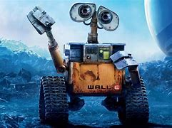

PRESENTACIóN
WALL-E
Este pequeño robot fue creado por el equipo LA FAMILIA DE wall-E de 5to semestre del grupo B de la especialidad de programación. Para expocicion y demostración para los compañeros y alumnos de primer semestre, en la feria de exposición de carreras. Se presenta este robot y la página con el motivo de demostrar las habilidades y conocimientos que se han adquirido a lo largo de la especialidad, con ayuda de la maestra Karina a lo largo de estos 4 semestres.
Todos conocemos a wall-E y quien no, vive debajo de una roca, pero aun asi wall-E es un adorable robot que se encarga de limpiar y recolectar la basura en un futuro lejano. Con su personalidad encantadora y su dedicación al planeta se ha convertido en un ícono de la sostenibilidad y la conservación del medio ambiente. Este pequeño robot es capaz de recoger y compactar basura, clasificar materiales y contribuir a la limpieza de nuestro hogar, ya sea en la Tierra o en el espacio. su diseño compacto y resistente le permite moverse por terrenos difíciles y realizar tareas con eficiencia. wall-E tambien es un recordatorio de la importancia de cuidar nuestro planeta y tomar medidas para reducir la generacion de resuidos. Su historia nos inspira a ser más concientes de nuestras acciones y a trabajar juntos para perservar nuestro entorno natural.
wall-E de programación
Despues de la inspiración que nos dio Disney con su wall-E fictício, que nos inspira a que debemos valorar más nuestro planeta y respetarlo. Y el imaginar que solo es fictício, el equipó decidio traer eso a nuestra realidad con este wall-E el cual podremos observar como esta diseñado, aun que no recolecta basura ni la compacta, sus brazos pueden llegar a ser de mucha utilidad para los que estudian laboratorista ambiental, ya que trabajan con mercurio, por lo que muchos sabemos no es apato para que la piel humana tenga contacto con el. Este robot puede ser de mucha ayuda y recoger este material ya que no corre peligro de daño y podria ser de eficacia
Esos es solo uno de los ejemplos que podría hacer wall-E, al igual que sus ojos cuentan con fotoresistencia que a la ausencia de luz se encenderan leds que alumbaran su zona.